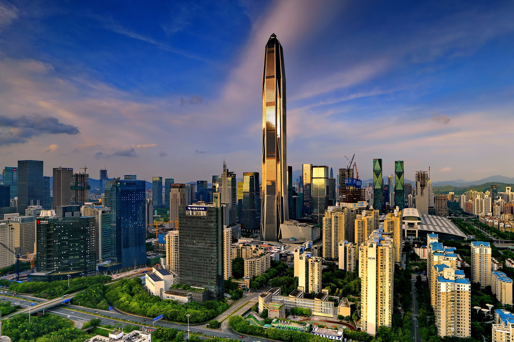
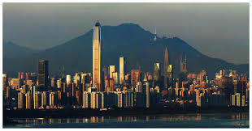
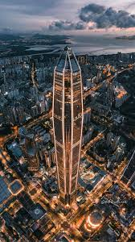
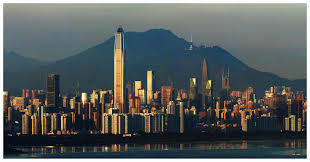
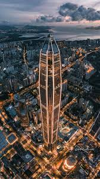
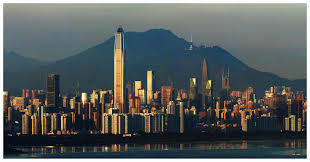
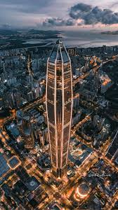

Ping An Finance Center
Ping An Finance Center to czwarty najwyższy budynek na świecie, znajdujący się w Shenzhen. Wysokość całkowita budynku wynosi 599 m co czyni go najwyższym wieżowcem w Shenzhen i drugim co do wielkości w Chinach, został otwarty w 2017 roku.

 




